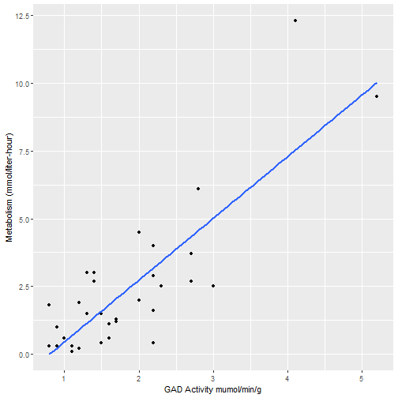
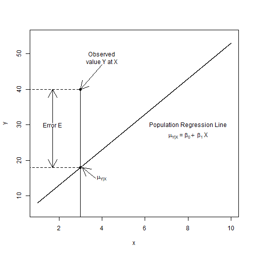

Adam J Sullivan
Assistant Professor of Biostatistics
Brown University
We use \[\eta_i = \beta_0 + \beta_1x_{i1} + \beta_2x_{i2} + \cdots + \beta_px_{ip} = \sum_{j=1}^p \beta_jx_{ij}\]
where:
Some common link functions are
| Random Component | Link Function | Outcome | Explanatory | Model |
|---|---|---|---|---|
| Normal | Identity | Continuous | Factor | ANOVA |
| Normal | Identity | Continuous | Continuous | Regression |
| Binomial | Logit | Binary | Mixed | Logistic Regression |
| Multinomial | Generalized logit | Binary | Mixed | Multinomial Regression |
| Poisson | Log | Count | Mixed | Poisson Regression |
\[ Y = \begin{cases} 1 & \text{if sucess}\\ 0 & \text{if failure} \end{cases} \]
\[E(Y) = np\] \[Var(Y)= np(1-p)\]
\[ \begin{aligned} p_i &= \dfrac{\exp\left(\beta_0 + \beta_1x_i\right)}{1+\exp\left(\beta_0 + \beta_1x_i\right)}\\ p_i\left(1+\exp\left(\beta_0 + \beta_1x_i\right)\right)&=\exp\left(\beta_0 + \beta_1x_i\right)\\ p_i &= \exp\left(\beta_0 + \beta_1x_i\right)\left(1-p_i\right)\\ \log\left(\dfrac{p_i}{1-p_i}\right) &= \beta_0 + \beta_1x_i\\ logit\left(p_i\right) &= \beta_0 + \beta_1x_i \end{aligned} \]
Then if we consider the logit:
\[ \begin{aligned} \text{If } p= 0 & \text{then } \log\left(\dfrac{p}{1-p}\right)=-\infty\\ \text{If } p= \tfrac{1}{2} & \text{then } \log\left(\dfrac{p}{1-p}\right)=0\\ \text{If } p= 1 & \text{then } \log\left(\dfrac{p}{1-p}\right)=\infty \end{aligned} \]

\[ \begin{aligned} \eta &= \beta_0 + \beta_1x_{i1} + \cdots + \beta_px_{ip} \\ g(E(y_i)) &= \beta_0 + \beta_1x_{i1} + \cdots + \beta_px_{ip} \\ g(p_i) &= logit\left(p_i\right) \end{aligned} \]
\[ \begin{aligned} \Pr(Y_i=0|x_i) &= 1- \Pr(Y_i=1|x_i)\\ &= 1 - \dfrac{\exp\left(\beta_0 + \beta_1x_i\right)}{1+ \exp\left(\beta_0+\beta_1x_i\right)}\\ &= \dfrac{1}{1+ \exp\left(\beta_0+\beta_1x_i\right)} \end{aligned} \]
library(haven)
wcgs <- read_dta("wcgs2.dta")
wcgs <- wcgs[,-16]
| Name | Description |
|---|---|
| id | Subject identification number |
| age | Age in years |
| height | Height in inches |
| weight | Weight in lbs. |
| sbp | Systolic blood pressure in mm |
| dbp | Diastolic blood pressure in mm Hg |
| chol | Fasting serum cholesterol in mm |
| Name | Description |
|---|---|
| behpat | Behavior |
| 1 = A1 | |
| 2 = A2 | |
| 3 = B3 | |
| 4 = B4 | |
| ncigs | Cigarettes per day |
| dibpat | Behavior |
| 1 = type A | |
| 2 = type B |
| Name | Description |
|---|---|
| chd69 | Coronary heart disease |
| 1 = Yes | |
| 0 = no | |
| typechd | Type of CHD |
| 1 = myocardial infarction or death | |
| 2 = silent myocardial infarction | |
| 3 = angina perctoris | |
| time169 | Time of CHD event or end of follow-up |
| Name | Description |
|---|---|
| arcus | Arcus senilis |
| 0 = absent | |
| 1 = present | |
| bmi | Body Mass Index |

library(broom)
fit.cont <- glm(chd69 ~ age, data=wcgs, family=binomial(link="logit"))
tidy(fit.cont, conf.int=TRUE)[,-c(3:4)]
## # A tibble: 2 x 5
## term estimate p.value conf.low conf.high
## <chr> <dbl> <dbl> <dbl> <dbl>
## 1 (Intercept) -5.94 3.00e-27 -7.02 -4.87
## 2 age 0.0744 4.56e-11 0.0523 0.0966